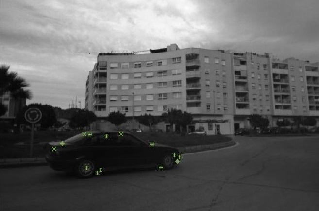

Moving Object Detection and Visual Odometry Using Stereo Camera Onboard a Vehicle
Course project under, Prof. Gaurav Pandey, IIT Kanpur (Jan-Apr 2016)
- Estimated egomotion (3D motion of the camera) in an iterative manner using optical flow and disparity which are obtained by using SURF features.
- Used RANSAC algorithm to obtain maximum number of inliers (features on stationary background) and estimated ?nal egomotion using least square
approximation
- Detected moving objects using the outliers generated by the RANSAC algorithm
- Clustered the most probable outliers, obtained by the RANSAC algorithm, into separate moving objects based on their location in 2D image and their
3D distance from the vehicle using K-means method
- Demonstrated visual odometry by keeping track of egomotion obtained at every instant of time
